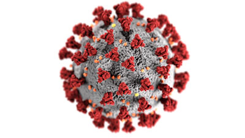

How Camera Link HS Helped in COVID-19 Vaccine Development
Though it’s typically associated with machine vision applications, the Camera Link HS (CLHS) interface offers benefits that extend well beyond the factory floor. For example, a team of researchers at the University of California–Berkeley is using a cryogenic electron microscopy (cryo-EM) device that leverages the CLHS standard for COVID-19 vaccine research.
Search for the Spike Protein
Cryo-EM involves flash-freezing a sample down to –180°C, which leaves the protein particles suspended in ice. For imaging samples, researchers use a grid, typically made of gold or carbon. The frozen samples are placed into holes or pockets in foil inside the grid. Using a technique known as single-particle analysis, researchers use particles extracted from thousands of images to construct 3D representations of viruses or proteins. It was this process that produced the first 3D images of the isolated spike protein of SARS-CoV-2, the virus that causes COVID-19. Spike proteins represent a key point of engagement with other cells. These proteins bind with human host cell receptors before beginning the process of virus replication, so disabling a spike protein’s binding ability is crucial in vaccine development. Identifying the SARS-CoV-2 spike protein was a primary focus in COVID-19 research; imaging the protein allowed researchers to understand its structure and to produce an epitope map of binding sites. This allowed researchers to determine which antibodies or inhibitors would prevent viral docking.
Mitigating COVID-19 Infections
During the spike protein research, the UC Berkeley team used Thermo Fisher Scientific’s Krios G4 cryo-EM instrument, equipped with a cold field emission gun operating at 300 kV. A Falcon 4 detector featuring a custom-designed 4096 x 4096 CMOS image sensor, with an internal frame rate of 250 fps, provided image capture capabilities. Electron impact and captured images were read out with an FPGA through a CLHS interface, with a data acquisition system comprised of custom FPGA boards.
Using the cryo-EM device, the team found that the spike protein consists of half a channel, which pierces the cell membrane only halfway — much different than the behavior of other known ion channels. The researchers found that deletion of the SARS-CoV-2 ORF3a protein and a related 3a gene in the original SARS virus, SARS-CoV-1, reduced the severity of illness in animal models. Targeting this protein in the vaccine helped reduce the severity of human COVID-19 infections, according to the team.